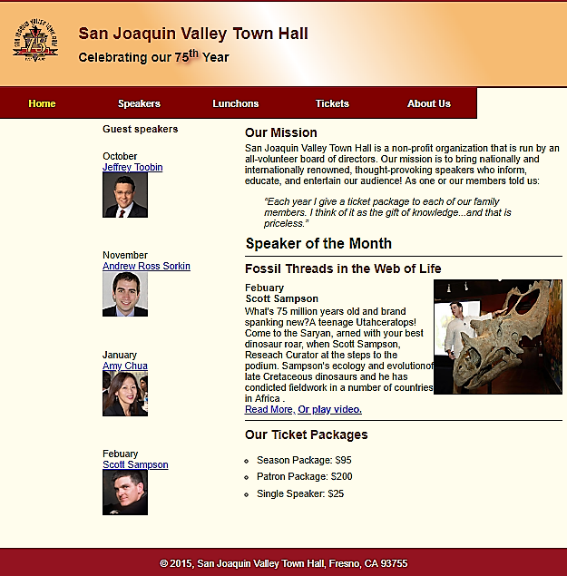

Who am I?
My name is DeLaney Jones, and I am studing at Lewis-Clark State College. I will graduate in 2020 with an Associates in Web Design and a Bachelors in Computer Science. Currently I work for Dr. Seth Long as a Research Assistant. We are working on a program called CASTER (Computer Assisted Segmentation Tool Enviroment Revisited). The goal of this program is to outline rod spherules within mouse eyes for further study. I have attended several research confrences to present our works, which as been well received.
Computer Science
I started gaining an interest in computer science in juionor high. I wanted to know how the computer worked on the inside, and started keeping a journal about computer facts. I continued working on filling up my journal through high school, but dropped it when I started college. I took my first year at Walla Walla community college, and then took a year off for medical reasons. Durring that time, I was homeschooling my little sister through Preschool. However, I was diapointed in the resources I could find to teach her. This encouraged me to create my own games that met her needs and kept her interest. Since then, I have been working on creating a Monster School series to provide those games and more to other children who can use them.

My Drawings
I drew the turtle in the upper left hand corner based on a photo from Altru Vistas Cuba Oceanic Society. I see turtles as a symbol of freedom, so I really like them. They are beautiful and elegant, and I feel honored to represent them in drawings. This particular drawing took about six months to complete, and I used colored pencils as my medium.

My Kitten
In around June of 2018, a litter of kittens showed up in my backyard. I took most of them to the animal shelter, but I feel in love with this one. I named her Sophia, and we are very close. She provides me with a time-based routeen, which really helps me. I'm training her to follow simple commands, and she is already leash trained. If I am home, she is never far from me.

Website Education
I am getting an Associates in Web Design from LCSC to compliment my Bachelors in Computer Science, which I am also working towards. So far, I have learned several languagues such as C#, CSS, JavaScript, and HTML. The image is an example of one of the projects I did in class. I also have some experience with Photoshop and Illustrator, which are used to provide website graphics.